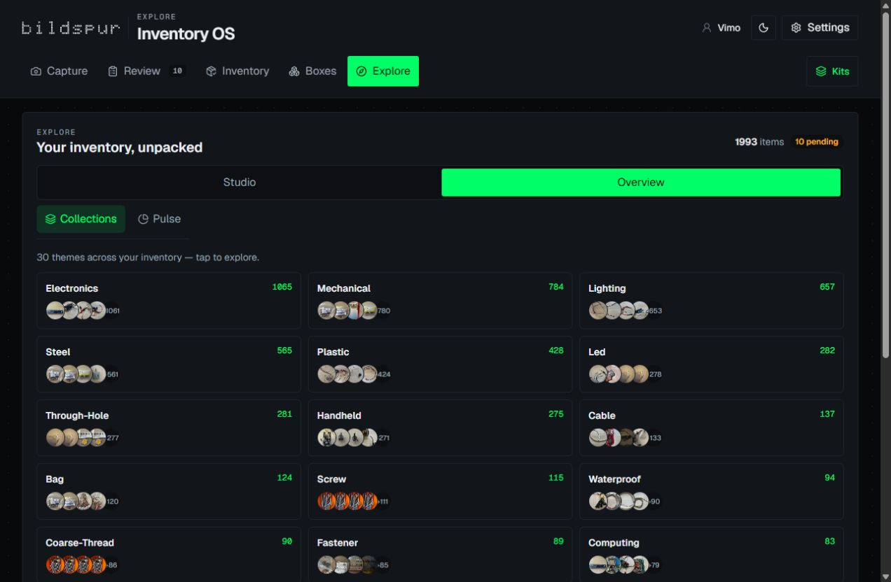
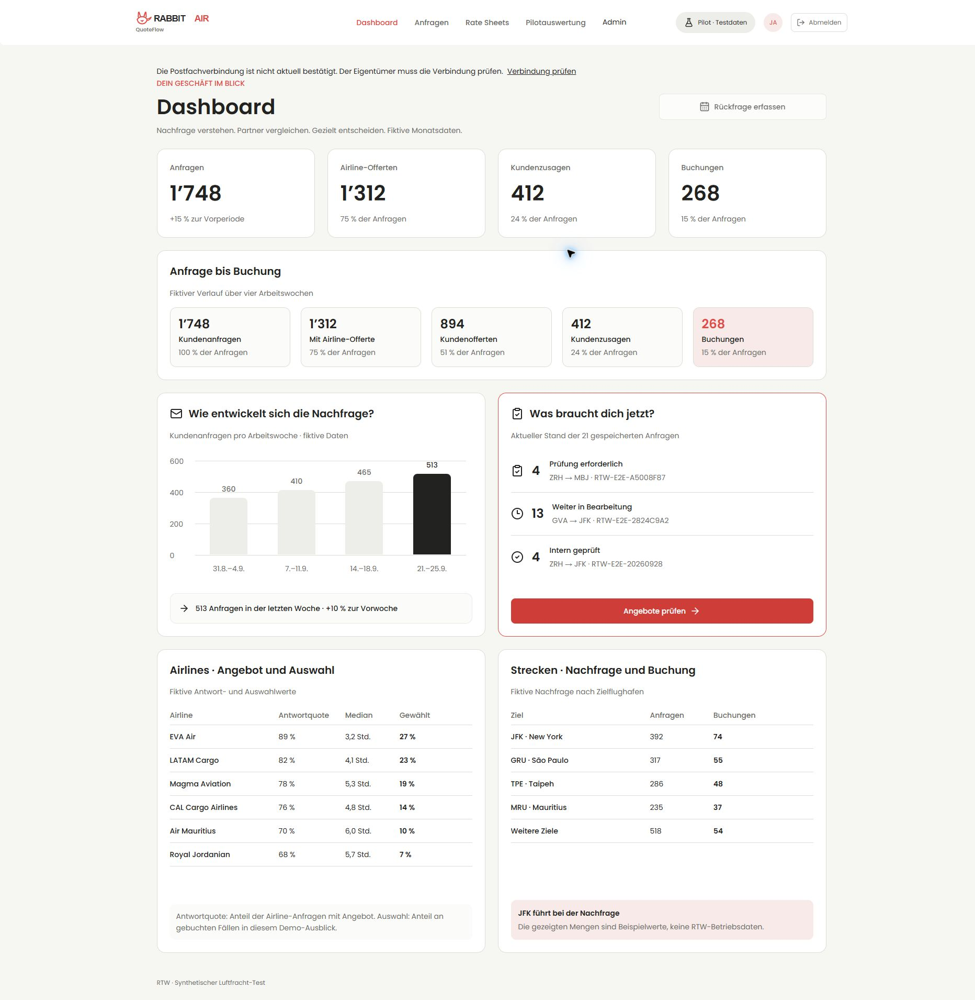
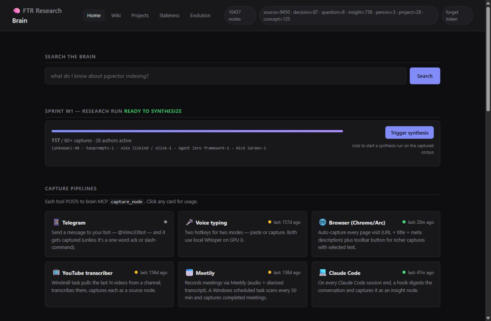
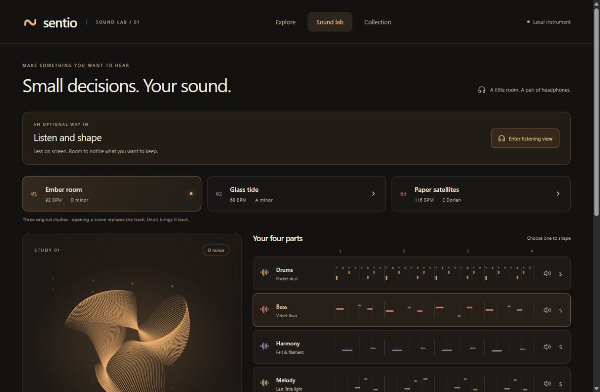

01 / LIGHT AS AN INSTRUMENTBILDSPUR ↗
Working app · ongoing development
LED Forest 5
An instrument for turning a room into light.
Explore the project ↗I’m Vikas. I turn curiosity into useful tools and unexpected experiences, with design, AI, and a willingness to try.
↙Working tools. Client pilots. Creative prototypes.
Different stages, and different collaborators.
Here’s what I’m making.
An instrument for turning a room into light.
Explore the project ↗
Almost 2,000 objects. A new way to imagine what they could become.
Explore the project ↗Give a place in your imagination a room to live in.
Explore the project ↗
An air-freight quote has a journey of its own.
Explore the project ↗
A memory layer that survives the next conversation.
Explore the project ↗
An attentive little room for making sound.
Explore the project ↗Immersive experiences, installation tools and the systems we use to make them.
My collaboration with Maurus: client pilots, research and tools for the studio.
Memory, local infrastructure, sound and new ways to connect people.
When a tool can act for you, the interface should make its next move understandable.
This little experiment explores a proposal, a review, and a decision. Try protecting the destination, or changing your mind.
Illustrative local demo with invented data. No model calls, external actions, or measured safety claims.An old note says “weekly updates.” A newer note says “monthly updates.” The assistant proposes replacing the old preference.
Awaiting your decision. Nothing has changed.
AI is also a material to play with.
A way to sketch a scene, follow a feeling,
and see where it goes.
I’m Vikas Mohan, based in Zurich. My path runs through creative direction, digital strategy, entrepreneurship, and now a growing practice of building with AI.
I’m drawn to the space between “what if?” and “try this.” I shape the problem, design the experience, and work with AI coding tools and collaborators to make the idea tangible.
At Bildspur, that includes immersive light and the tools behind our studio. With Maurus at Follow the Rabbit, it includes client pilots and business workflows. My independent explorations connect memory, local infrastructure, sound and social experiences.
Listen, research, and make the assumptions visible before choosing what to build.
A working prototype turns an abstract conversation into decisions you can see and feel.
Review the result, name the limits, and carry the useful decisions into the next experiment.
I’m interested in AI tools people can understand,
creative collaborations, and ambitious questions.